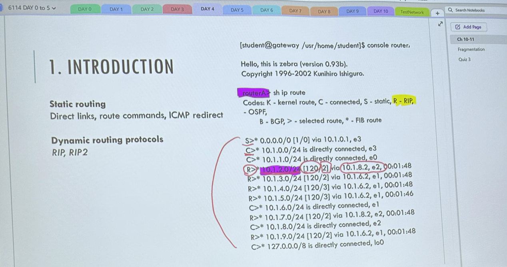
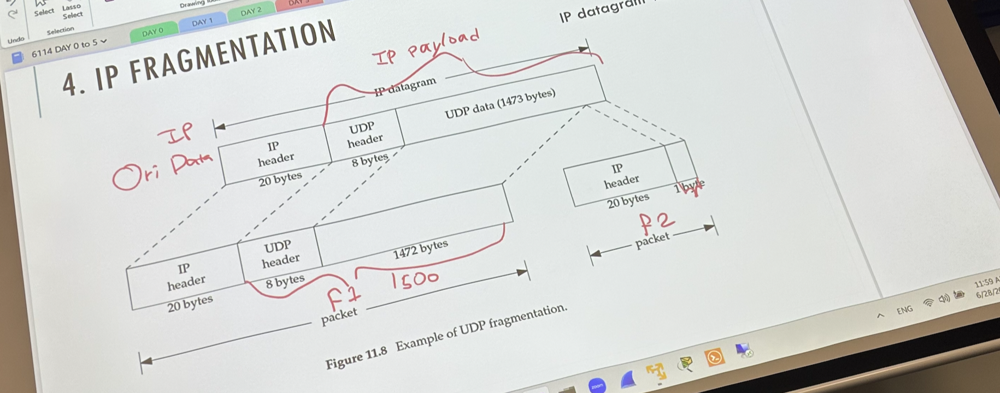

UDP & IPv4 Header - 课堂笔记
Contents
Read Routing Table

C 代表直接相连, 例如上图 10.1.1.0/24 e0, 即该路由器的 e0 interface 的 ip 地址为10.1.1.0/24,
R 代表该 IP 由 RIP 协议获得, 如第一行 R 解释如下: 若目的地址为 10.1.2.0/24, 则下一跳的 IP 地址为 10.1.8.2, 然后 [120/2] 里面的 2 是metric, 120 就是代表实际距离, RIP中仅用 hops 数代表距离,
UDP & IPv4 Header
UDP header 只有 8 字节, 很好记, 如下:

UDP package 总长度最多可以为 65535 bytes, 前 8 bytes 固定是其 header, 剩下的为 payload,
UDP 在 IP 之上, 所以整个 UDP 在 IP Message 的 payload 中, 大概如下 (注意这只是大致 IPv4 的格式, 可以看出白色部分就是 UDP 的内容):

真正的 IPv4 header 很复杂:

接下来说说几个 fields, 具体可以参考: https://en.wikipedia.org/wiki/Internet_Protocol_version_4
-
Identification
-
- This field is an identification field and is primarily used for uniquely identifying the group of fragments of a single IP datagram.
- 这里就要注意一下, 在 ip fragmentation 里, 即整个 IP 数据报太大不得不分段, 这时候说的 ip datagram size 就是整个IP数据报的长度, MTU指的是分段之后的IP frame的最大长度, 然后分段之后的 ip frame 也要包含 20 bytes 的 ip header, 不然怎么拼接, 或者辨别该 frame 属于哪个数据报呢?
-
Flags
-
- bit 0: Reserved; must be zero.[b]
- bit 1: Don’t Fragment (DF)
- bit 2: More Fragments (MF)
-
Fragment offset
-
- The fragmentation offset value for the first fragment is always 0.
- Fragments are specified in units of 8 bytes, which is why fragment length must be a multiple of 8.
- Therefore, the 13-bit field allows a maximum offset of (213 – 1) × 8 = 65,528 bytes, with the header length included (65,528 + 20 = 65,548 bytes), supporting fragmentation of packets exceeding the maximum IP length of 65,535 bytes.

Author David
LastMod 2023-06-28